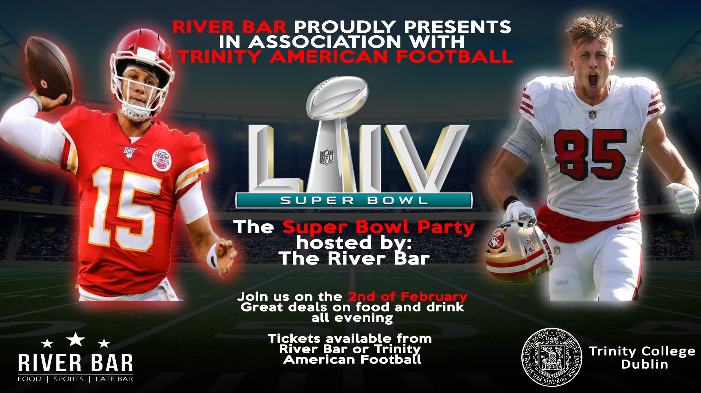

A hardworking, goal-driven individual with a passion for business, marketing and technology
About MeMy name is Eoin Maguire and I am an undergraduate in Trinity College Dublin studying Computer Science and Business. After graduating from Gael Choláiste Cill Dara secondary school with all honours,
studying Computer Science and Business allowed me to further continue my business studies while allowing to further my knowledge of technology and coding.
Having spent time working as a website administrator for a retail store during my adolescence, I decided to pursue an education in Computer Science. With little
background knowledge in the subject, I quickly had to adapt and learn in order to succeed in the course.
I have a history of public speaking as a result of my debating background. I am a two-time school debating champion, as well as a Rigby Jones Debating Competition
particiant and the proud owner of an Oireachtas Medal for Debating.

Skills and HobbiesAs an avid sports fan, I played many different sports during my youth. I am a county champion swimmer, two-time county winning Gaelic Football Player (schools and club)
as well as having spent many years playing soccer. My leadership and motivational abilities saw me named as captain for several of these teams. More recently I took up playing American Football in College and during my Senior Freshman Year was elected Public Relations Officer for the club. Seen above is a copy of
the Superbowl Event ticket design I helped to create.
Since entering college I have managed to increase my coding skillset. I have experience using Java, C, Python, HTML, CSS and Bootstrap as well as a strong understanding of Algorithms and Data Structures. From a Business aspect,
I have experience with Marketing, Economics, Finance, Operations Management and Organisational Behaviour.
Here's my CV
Please find here a copy of my CV, which includes further information on my previous work experiences and skills.
Samples of my code can be found on my github page here